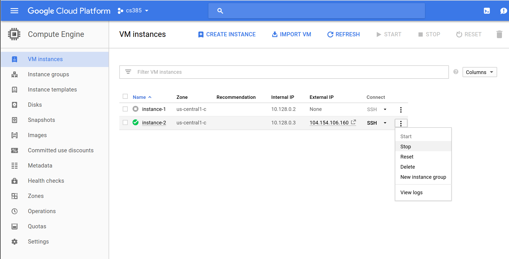

In this lab we will deploy a simple Web Service, and we will scale it horizontally and vertically and measure different levels of performance.
Deploy a new micro instance on google cloud platform. Select the same properties you used for the instances that we created during Lab No. 1 (micro instance, 0.6 GB memory, Ubuntu 16.04 LTS, standard persistent disk of 10 GB, HTTP/HTTPS traffic enabled. Name this instance restserver-0
SSH into the instance. Note: You might need to create a new set of ssh keys.
We need to install the software dependencies to be able to run a REST API with the Flask framework. Run the following sequence of commands in your instance
>> sudo apt-get update >> sudo apt-get install -y python-pip >> sudo pip install flask >> sudo mkdir /opt/restserver
Create or copy a filled called restserver.py into the instance’s /opt/restserver directory with the following contents:
""" Simple REST API that calculates fibonacci numbers and keeps a counter of the number of requests received """ import json from flask import Flask, Response, request app = Flask(__name__) call_count = 0 fibonacci_numbers = [0, 1] @app.route("/status") def status(): return '{{"cache_length": {}, "requests": {}}}'.format( len(fibonacci_numbers), call_count) @app.route("/fibonacci", methods=['POST', 'GET']) def fibonacci(): global call_count call_count += 1 number = int(json.dumps(request.get_json()['fibonacci_number'])) resp_content = '{{"fibonacci_number": {}, "value": {}}}'.format( number, calc_fibonacci(number)) return Response(response=resp_content, status=200, mimetype="application/json") def calc_fibonacci(number): """ Calculates a fibonnaci numbers recursively Does not handle calculations that exceed the maximum recursion depth """ if number < 0: raise ValueError if number < len(fibonacci_numbers): result = fibonacci_numbers[number] else: result = calc_fibonacci(number - 2) + calc_fibonacci(number - 1) fibonacci_numbers.append(result) return result
Start the service:
>> sudo FLASK_APP=/opt/restserver/restserver.py flask run --host=0.0.0.0 --port=80
Test your service. While on a terminal session on your workstation (i.e. not on your VM instance), type the following command (replace <YOUR_INSTANCE_ADDR> with the External IP Address of your instance):
>> curl -X POST -H 'Content-Type: application/json' http://<YOUR_INSTANCE_ADDR>/fibonacci -d '{"fibonacci_number": 20}'You should see the following output:
{"fibonacci_number": 20, "value": 6765}
We need to save the instance at its current state so we can easily make clones to scale the service horizontally. To do this, first close your SSH session. After you have logged out of your SSH session, go back to the Google Cloud Platform console, and from the VM instances dashboard, select your instance, and from the context menu on the right select Stop:

To create an image, select Images from the left menu. Click on the [+] CREATE IMAGE link, and on the Create an image prompt enter “lab02-restserver” as Name and provide a Description of your preference. Leave Source as “Disk” and from source disk, select “restserver-0” (The instance that we created and stopped during this lab). Once all these options have been completed/selected, click on the Create button. The creation of the image will take a few minutes.
To measure the performance of our web service we are going to use ApacheBench, also known as ab, a popular benchmarking tool (https://httpd.apache.org/docs/2.4/programs/ab.html).
Restart your instance, SSH into it and restart the Fibonacci REST API service we previously created. Note that your instance will probably be assigned a different External IP Address. This time we want to leave the service running in the background. Execute the following command to run the REST API server in the background (After this you can close the SSH session and the restserver will keep running in the background. Be aware that this does not mean that the REST server will autostart if you stop/start the instance.)
nohup sudo FLASK_APP=/opt/restserver/restserver.py flask run --host=0.0.0.0 --port=80 &
We are now going to create an instance in which we will execute the benchmarks. Deploy another micro instance on google cloud platform. Select micro instance, 0.6 GB memory, Ubuntu 16.04 LTS, standard persistent disk of 10 GB, and HTTP/HTTPS traffic disabled. Name this instance tester-0
SSH into the tester-0 instance. Run the following sequence of commands to install ab:
>> sudo apt-get update >> sudo apt-get install -y apache2-utils build-essential
Create a file called payload.json with a single line with {"fibonacci_number": 20} as its content:
>> echo '{"fibonacci_number": 20}' > payload.json
Run a test ab benchmark to verify installation (replace <REST_SERVER_EXT_IP> with the external IP address of the REST server):
>> ab -p payload.json -T application/json -m POST -c 10 -n 10 -s 10 -r http://<REST_SERVER_EXT_IP>/fibonacciThe command should produce an output similar to this:
This is ApacheBench, Version 2.3 <$Revision: 1706008 $> Copyright 1996 Adam Twiss, Zeus Technology Ltd, http://www.zeustech.net/ Licensed to The Apache Software Foundation, http://www.apache.org/ Benchmarking 35.188.78.135 (be patient).....done Server Software: nginx/1.10.3 Server Hostname: 35.188.78.135 Server Port: 80 Document Path: /fibonacci Document Length: 246 bytes Concurrency Level: 10 Time taken for tests: 0.073 seconds Complete requests: 10 Failed requests: 0 Total transferred: 4050 bytes Total body sent: 1700 HTML transferred: 2460 bytes Requests per second: 137.58 [#/sec] (mean) Time per request: 72.687 [ms] (mean) Time per request: 7.269 [ms] (mean, across all concurrent requests) Transfer rate: 54.41 [Kbytes/sec] received 22.84 kb/s sent 77.25 kb/s total Connection Times (ms) min mean[+/-sd] median max Connect: 1 1 0.1 1 2 Processing: 3 14 20.3 8 71 Waiting: 3 14 20.3 8 71 Total: 5 15 20.3 9 73 Percentage of the requests served within a certain time (ms) 50% 9 66% 10 75% 10 80% 10 90% 73 95% 73 98% 73 99% 73 100% 73 (longest request)
Since we are going to run our benchmarks with high concurrency levels, we need to increment the maximum number of open files. Run the following command (Note: this is not a persistent change, and you will need to run this command again if you log out or reboot the tester-0)
>> ulimit -n 10000
In the ab benchmark that we run before, the -c option is used to simulate a given number of simultaneous connections (10 in that case), the -n option is used to determine the number of requests to issue(10 requests in the example). Experiment running ab with different concurrency levels, in batches of 10000 requests. Fill out the following table:
| Concurrency | Mean Request Time (ms) | Longest request | 98 percentile |
|---|---|---|---|
| 10 | |||
| 20 | |||
| 50 | |||
| 100 | |||
| 200 | |||
| 500 | |||
| 700 | |||
| 1000 | |||
| 1200 | |||
| 1500 | |||
| 2000 | |||
| 2500 | |||
| 3000 |
Note
Apparently ab has a bug where if one of the requests times out, it exits with the message apr_pollset_poll: The timeout specified has expired (70007), instead of recording it as a failed request. If you run into this problem try to run the test again. You will probably have this problem once you go over 1000 concurrent users in a single node.
Report
If we want to have a Service Level Agreement in which we tolerate a maximum response time up to 1.5 seconds, with an average request time less than 200 ms, with a response 98% of the time within 300 ms, what is the maximum number of concurrent users that we can support with only one server. Use one or more charts based on the data collected on the previous table to substantiate your answer.
In this section we are going to scale the restserver horizontally with the help of a load balancer.
Create another instance based on the “lab02-restserver” image. Name this instance “restserver-1”, and make sure that you enable HTTP/HTTPS traffic.
Start the restserver in “restserver-1” (in the background, as we did before) and make sure that it works (use the Internal IP Address for your test). At this point we have two instances running with the restserver. However, we need to add a load balancer in front of them in order to distribute the request load between the instances.
We will use nginx as our load balancer. Create another microinstance (with the same specs as restserver). Name this instance “loadbalancer-0”.
SSH into “loadbalancer-0” and execute the following commands to install nginx and its software dependencies:
>> sudo apt-get update >> sudo apt-get install -y nginx
nginx accepts a maximum of 768 worker connections by default. We need to increase that number for our testing. Make a backup of the /etc/nginx/nginx.conf file and modify the worker_connections parameter under the events directive to allow 4096 worker connections.
We also need to update the maximum number of open files. We want to apply this to the nginx service only. Run the following commands:
>> sudo mkdir /etc/systemd/system/nginx.service.d >> sudo bash -c 'echo -e "[Service]nLimitNOFILE=65536" > /etc/systemd/system/nginx.service.d/local.conf' >> sudo systemctl daemon-reload >> sudo systemctl restart nginx
You can verify that the previous setting took effect by looking at the limits for the process id for nginx (you can find the value of <PID> using ps | grep nginx):
>> cat /proc/<PID>/limits
We now need to configure nginx to serve incoming requests to /fibonacci and forward them to the restserver nodes in a round robin fashion. To do this, we will edit the configuration file located under: /etc/nginx/sites-available/default, but before making any changes to that file we should make a backup
>> sudo cp /etc/nginx/sites-available/default /etc/nginx/sites-available/default.backup
Open this file and notice that it has a json-like format. To enable load balancing, we need to use the upstream directive. Add this to the file
upstream fibonacci { server <RESTSERVER-0-INTERNAL-IP>; server <RESTSERVER-1-INTERNAL-IP>; }
We also need to modify the location element from the server directive to proxy requests to the fibonacci upstream group that we just added:
location / { proxy_pass http://fibonacci; }
After these changes have been applied, your file should look like the following example (the internal IP address most likely be different, of course)
# ... lots of comments # Default server configuration # upstream fibonacci { server 10.138.0.3; server 10.128.0.3; } server { listen 80 default_server; listen [::]:80 default_server; # .. more comments root /var/www/html; # Add index.php to the list if you are using PHP index index.html index.htm index.nginx-debian.html; server_name _; location / { proxy_pass http://fibonacci; } # ... more comments } # more comments at the end
Once you have finished editing the nginx configuration, we need to reload it. Run the following command:
>> sudo service nginx reload
If you encounter any errors, it is almost certain that there is a problem with your configuration file. You can get valuable troubleshooting information by running this command:
>> sudo systemctl status nginx.service
Once you have completed the configuration of the load balancer, we can test it by using the following curl command, from any computer. Try it from “tester-0” using both Internal and External IP addresses of “loadbalancer-0”. Try it from the outside work (a.k.a. your workstation) using the External IP Address.
>> curl -X POST -H 'Content-Type: application/json' http://<LOADBALANCER_IP_ADDRESS>/fibonacci -d '{"fibonacci_number": 20}'
Our restserver includes an status endpoint that lets us see the size of an internal cache that holds previously computed fibonacci numbers, and also the number of requests. Run the following command several times, and notice if you see different output every time:
>> curl http://<LOADBALANCER_IP_ADDRESS>/status
Report